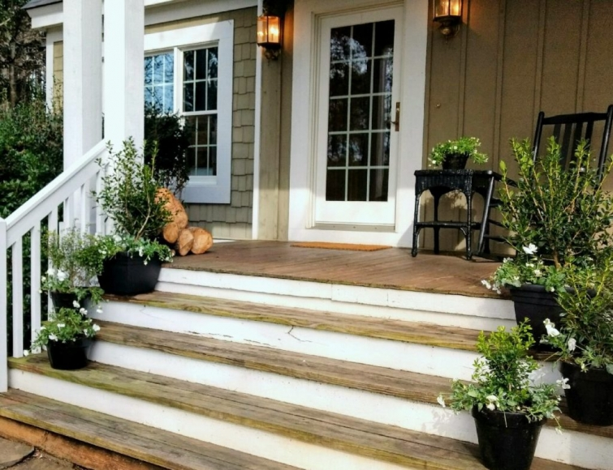
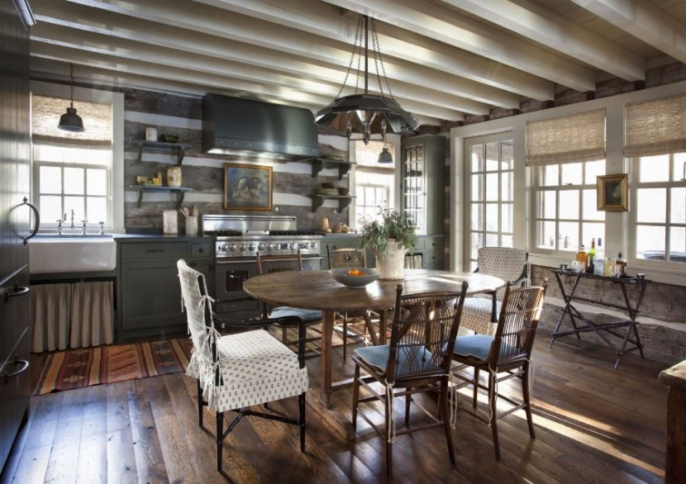
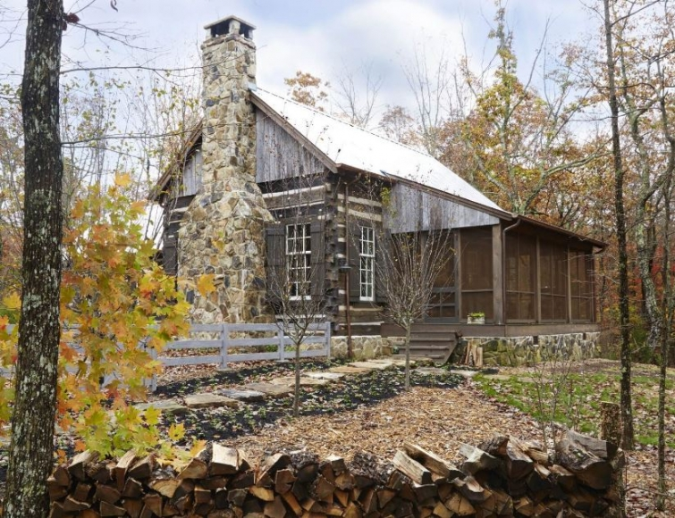

.png)
.PNG)
.PNG)
.PNG)
.PNG)
.PNG)
.JPG)
.JPG)
.PNG)
.PNG)



Happy Monday!  I hope your weekend was a good one.  Ours was much busier than I was expecting it to be.  This post was supposed to be a Talk of the Weekend one, but the only thing I was able to check off my weekend to-do list was replanting those pots up there on the front porch.  (At least I got that done!)  Anyway, I have some fun and pretty things for you to see today…even if it is Monday. 🙂
source
- Â First up, this log cabin. Â Do you remember that gorgeous kitchen above from last fall? Â It was decorated by Tammy Connor in a house that James F. Carter designed for his clients from a couple of old log cabins. Â I loved all the rooms in the house but could never find a photograph showing the exterior. Well, the search is over because James Carter’s website now has it featured. Â Here it is in all its rustic beauty (and be sure to click on the link so that you can visit all the rooms again!)

2. Â Do you remember that I am a huge Disney fan? Â Well, you won’t believe what I found! Â A house…not just any house…a house that is a replica of the Haunted Mansion from Disneyland! No joke, and it’s located in Georgia (and it is not haunted.) Click on the source below the photo for more pictures and even a video tour.

3. Â Have you seen this movie?
It is on my list to see this week, and I know it is going to be so good.
4. Many of you, like me, adore Emma Bridgewater’s pottery, but did you know she now designs wallpaper as well?  It’s true!  And it seems to be inspired by some of her pottery.  Check out more of it here.
5. Have you made plans for a Super Bowl party? (I know you are going to cheer on the Atlanta Falcons, right? 🙂 )  Here are a few snacks that would be perfect for your party.

6. Or perhaps you would like your Super Bowl party to be a Soup-er Bowl party. Â Here is inspiration for that if you happen to go that route.

7. Â Our new puppy has been keeping us quite entertained (and busy.) Â The only trouble she has gotten into in the last week was rolling up the rug in the foyer and stomping in her water bowl when she discovered it makes a great splash pool! Â Other than that, she has been pretty good…especially for a lab!

 And speaking of dogs, if you are looking for inspiration for a dog party, I found the perfect one here!

8. Â Okay, back to pretty houses. Â I think you will like this one on Nantucket…

9. Â And this one in Hingham, Massachusetts.

10.  Have you been looking for inspiration for decorating for Valentine’s Day?  Love love love these dishes from Mark and Graham, but I do not need any more dishes..and certainly not gingham ones! (But aren’t they cute?! 🙂 )

11. Â More Valentine’s Day inspiration.
Who can resist a heart shaped strawberry shortcake?

12. Â And finally one last food item for your Valentine’s Day (or really any day.)
60 seconds of directions, and then it bakes for 40 minutes.
And that’s all we have time for on this Monday. Â Hope you enjoyed the random goodies!
Have a great week!!
Until next time..


.PNG)
Kelly,
I love all your posts and this one was especially fun. I must see this movie!
It also is fun to follow along on Instagram. (mitchanddianne)
Josie’s Super Bowl party will be fun. We are looking forward to Josie’s Super Bowl party. Of course, we will be pulling for the Falcons.
Your puppy is just the cutest. I have to tell you Kathy walked my dog on a leash a couple of weeks ago. I should have taken a picture because that is a major milestone.
I hope you have a fantastic weekend.
DiAnne
Love seeing that adorable pup and that house in New England Home is to die for!! Thanks for the shares!
Loved the post. Now I have to go check out all the Sources. I hope you get to see Hidden Figures. We loved it!
I’m not sure you can mention the Falcons AND anything in New England-atleast not until next week:)) Just kidding, I would LOVE to go to Nantucket! Go Falcons-beat the Patriots:))
Great post,and what a perfect precious puppy picture ! Ha !
Go Falcons
Kelly,
Thank you for all of the inspiration lovely things to explore but your sweet puppy takes the cake!
Dawn
Wow! A plethora of things to explore! I must return and view them later, because I know I will dally at each one and find I’ve spent hours exploring! I love E.B.’s wallpaper though, and love your pup sooo much. You should get a raised base for her bowls (or hubby could make one) so that she can’t tip them. Makes it easier for them to digest their food too, especially when she gets bigger. I’ll be back later!
The movie was outstanding! I hope you enjoy it! Love the houses featured in this post…and the sweet puppy!
———————————————————————
I am looking forward to it Debbie! I am happy you liked those beautiful houses (and the puppy!)
Kelly
Great post! You are going to love Hidden Figures! The theater audience clapped at the end of the movie when I saw it. I am reading the book now.
You doggy pictures just keep getting more precious!
Love the Nantucket room. When we visited there last summer I decided it was everything I loved all rolled into one quaint town… the ocean, rose covered cottages, hydrangeas everywhere, cobblestone streets, a light house, pretty white sand and bicycles with wicker baskets parked outside the restaurants! Kinda like my dream of heaven on earth.
——————————————————————–
Thank you Katrina! Can’t wait to see the movie, and I love it when the theater audience claps at the end of a movie! Must be VERY good. I am with you on Nantucket being my heaven on Earth (probably just in the summer…winter would be rough on that island!) One day we will get there…on my bucket list for sure!
Hope your week is off to a great start. 🙂
Kelly
Your post was a happy surprise today. I do want to see Hidden Figures. The music on the trailer is fun too! I also liked my visit to Nantucket today. I love that post card picture of the bathing beauty. Josie is hosting a Super Bowl Party that we are all looking forward to attending on Sunday. My mom just asked if Josie could put the party off a week so I could stay longer on my visit with her. LOL.
———————————————————————
So glad the post was a happy surprise for you today Kathy! (It truly was supposed to be a weekend post. 🙠) How fun all of you are going to Josie’s for the Super Bowl…sure hope all of you are going to be cheering on the Falcons! And too funny your mom wants the party postponed! Wouldn’t be quite the same though. LOL
Kelly
We are obsessed with James F. Carter and did a feature on him last week. The cabin is amazing! Excited about Valentine’s Day and love the Mark and Graham china – so cute. Happy Monday, Kelly!
——————————————————————
His work is just brilliant, and I had planned to do a “Designer to Love” post on him until I saw you had written yours last week. (You beat me to it!) Yes, excited about the day of love here too….I would love those M&G plates and mugs!
Happy Monday to you too!
Kelly
I’ve never seen such a charming log cabin! I clicked over to their site and looked at all the photos, and you are right that this is a rustic beauty. I could just curl up there and write the best book in the world!
And I want to play with Gabby, but I’m glad she lives with you!
——————————————————————-
I agree! I have never seen such a beautiful log cabin. Truly makes me want a calm blue and green color scheme around here. You are welcome to come play with Gabbie any time you would like. (I really did put in a wish for another beagle but I got outvoted this time.)
Hope your week has started wonderfully Leslie Anne.
Kelly
Kelly,
I’m so happy Gabbie is being such a good puppy. I’ve enjoyed the pictures you’ve posted on Instagram.
I recently saw Hidden Figures and loved it! It’s so well done.
I’m making my own Valentine’s cards this year thanks to inspiration by Annie of Most Lovely Things.
Pretty houses, I will be heading to each link to see the rest.
xo,
Karen
———————————————————————
So far so good, Karen…but we know this is probably “the calm before the storm.” 🙂 Thank you for following on Instagram. Yours are always so beautiful!
We can’t wait to see the movie! Need to check out Annie’s valentines if you are taking them on as a project. Sounds like fun!
Happy Monday!
Kelly
Gabbie’s picture is adorable. She has the sweetest face. Love the porch. What is the white flower that you planted with the boxwood in the pots?
——————————————————————–
Thank you Kay! She has been sweet so far. (Fingers crossed here!) The white flowers in the pots are pansies and violas.
Kelly
The movie is great! I loved all the homes and that sweet puppy. Consider yourself lucky if that is all that has happened.
——————————————————————-
Thank you for another recommendation for the movie Sandy! Glad you liked all the houses (and the puppy.) I know we are in for wilder days with our fast growing dog!
Kelly
I loved the Emma Bridgewater wallpaper! Every room in my New York colonial had wallpaper. The house in Florida, not so much. As I look at that charming pattern, I might rethink my decision. I’m hosting a Valentine luncheon in Feb, and the strawberry shortcakes looked wonderful for my dessert. I always get such great ideas from your posts, Kelly. Thanks so much for your inspiration.
——————————————————————–
After years of removing and hanging wallpaper in our other house, I am trying SO hard to not like wallpaper…but goodness it is getting harder and harder with all the pretty patterns out today! Your Florida house might be getting more if you are like me. A Valentine luncheon looks like fun, and I am sure everyone would love that strawberry shortcake. (I know I would!) I’m so glad you find inspiration here on the blog Judy!
Thanks for visiting today!
Kelly
Would love to have your suggestion for gingham drapery. Thanks!
—————————————————————–
Mechelle, click on the FAQ tab up on the red bar below the header photos. It will give you room by room sources of the fabric I used in the house. If you need ready made drapes, then go to Country Curtains: https://www.countrycurtains.com/search.do?query=check They have a good selection. 🙂
Kelly
How nice to have a treat on Monday morning! Will go back and enjoy reading all the source info! Loved the cabin picture and of course the bath of Gabby!! I must say I have been especially thrilled to see your photos on Instagram and I am still learning how to use it myself! I got my first gingham salad plates – Pioneer Woman on sale after Christmas at Walmart. I am using them for Valentine’s Day when we will have prime rib, loaded baked potato and salad and some kind of yummy dessert- maybe cherries on a cloud ( if I can make it right!) My daughters are taking me to Hidden Figures for my birthday ( #71! ) Love when you recommend movies/books/places to see! January is almost gone! Mercy how fast the days of our lives fly by! Thankful for each day! 💕🤗💕Also, thankful for you
———————————————————————
Thank you so much for following along on Instagram. Like you, I am still trying to figure out what I am doing! I looked at those same red check plates at Walmart! Loved them, but they had a tad more orange in them than my drapes so I did not get them. They would work well here with any of the other drapes though.They were a pretty red check! Your menu sounds delicious! What a great plan for your birthday, and I know you will enjoy it. 🙂
Happy Monday (and early happy birthday to you.)
Have a fun week!
Kelly
Your puppy sounds like a “puppy”! They are so cute but a lot of work as well. Loved all the photos and I did not know Emma Bridgewater designed Wall Paper. I was just looking at some of her things on EBAY this week. I hope to see that movie as well. It sounds like a winner.
——————————————————————
It is like having a new fast-growing baby here! We aren’t even leaving her alone here…she has traveled in her crate with us to a couple of places. Don’t you love Emma Bridgewater’s things?! I will have to check out Ebay for some of her plates. Great idea! Hope we both get to see the movie soon.
Happy Monday Arlene!
Kelly
Hi Kelly: Your flower pots look great; it will be Memorial Day before we can safely pot annuals. We saw Hidden Figures last week, and loved it! I love the setting/kitchen of the log cabin. My favorite picture has to be the puppy!
We will be watching the Super Bowl; still working on the party food! Cindy
——————————————————————–
Thank you for the compliments Cindy! Our pansies do well through the mild winters here. (I wish we had more cold weather!) Can’t wait to see the movie, and I am glad you got to see it. Glad you liked the puppy photo…she can be rather photogenic when she tries! LOL Good luck getting your menu together for the party. I’ve got to do the same!
Kelly
Do Not Miss the movie Hidden Figures. Very Good. My personal favorite is LION. Another powerful movie is FENCES. Enjoyed immensely SULLY, LOVING. I thought Jackie and Moonlight was just okay. Very disappointed by Manchester of the Sea. Lastly to my surprise, I was pleasantly surprised at how much I liked La La Land.
Have you noticed that most movies had only one word in their title.
——————————————————————-
Goodness! Thank you for all the movie recommendations Mary Ann! We too loved Sully…haven’t see any of the others except for La La Land. It was alright to me, but I would have majorly changed the ending. And I will happily watch Ryan Gosling in anything. 🙂 (And what is up with all the one word titles?)
Kelly
Hi Kelly. Enjoyed your random post, happy to hear you are enjoying Gabbie and she is so well behaved! Right now, however, all I am focusing on is that chocolate dessert. Oh my gosh! Pure, simple decadence. Thanks for that (I think!).
———————————————————————-
I’m happy you liked all the randomness of the post, and yes, we are enjoying Gabbie (but right now my husband has her running circles in the kitchen!) Didn’t that chocolate look delicious?! I really want to make that.
Hope your week is off to a great start!
Kelly